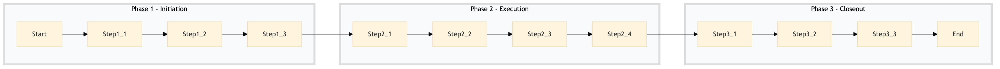

| Role | Steps |
|---|---|
| Revenue Manager | 1.1 1.2 1.3 2.2 2.4 3.1 3.2 3.3 |
| Front Desk Manager | 1.1 2.1 3.3 |
| Step | Name | Role | System | Input | Output | KPI | Dec? | Exc? | Pain Point / Risk |
|---|---|---|---|---|---|---|---|---|---|
| 1.1 | Initiate Length-of-Stay Restriction Review | Revenue Manager | Oracle OPERA Cloud | Current occupancy data, competitive analysis reports | Length-of-stay restriction review report | Completion within 1 hour | N | Y | Accessing real-time occupancy data across multiple systems. |
| 1.2 | Define New Length-of-Stay Restrictions | Revenue Manager | IDeaS G3 RMS | Length-of-stay restriction review report | New length-of-stay restrictions plan | Completion within 2 hours | Y | N | Balancing short-term occupancy with long-term revenue goals. |
| 1.3 | Update Room Rates Based on Restrictions | Revenue Manager | SynXis CRS | New length-of-stay restrictions plan | Updated room rate matrix | Completion within 1 hour | N | Y | Synchronizing rate changes across multiple channels. |
| 2.1 | Communicate Changes to Front Desk Staff | Front Desk Manager | Oracle OPERA Cloud | Updated room rate matrix | Training session notes | Completion within 30 minutes | N | Y | Ensuring consistent communication across all staff. |
| 2.2 | Update CRM System with New Policies | Revenue Manager | Marriott Bonvoy CRM | New length-of-stay restrictions plan | Updated CRM policy document | Completion within 1 hour | N | Y | Maintaining accurate and up-to-date customer information. |
| 2.3 | Monitor Occupancy and Revenue Impact | Revenue Manager | Oracle OPERA Cloud, Microsoft Power BI | Real-time occupancy and revenue data | Occupancy and revenue impact report | Completion within 30 minutes | Y | N | Interpreting complex data to make informed decisions. |
| 2.4 | Adjust Restrictions Based on Monitoring Results | Revenue Manager | IDeaS G3 RMS, SynXis CRS | Occupancy and revenue impact report | Adjusted length-of-stay restrictions plan | Completion within 1 hour | N | Y | Balancing immediate occupancy needs with long-term strategies. |
| 3.1 | Finalize and Document Changes | Revenue Manager | Oracle OPERA Cloud, IDeaS G3 RMS | Adjusted length-of-stay restrictions plan | Finalized length-of-stay restriction document | Completion within 1 hour | N | Y | Ensuring all changes are documented and compliant. |
| 3.2 | Review and Report on Process Outcomes | Revenue Manager | Microsoft Power BI, Oracle OPERA Cloud | Finalized length-of-stay restriction document | Process outcome report | Completion within 1 hour | N | Y | Summarizing and reporting on complex data. |
| 3.3 | Closeout Meeting with Key Stakeholders | Revenue Manager, Front Desk Manager | Oracle OPERA Cloud | Process outcome report | Meeting minutes | Completion within 1 hour | N | Y | Ensuring all stakeholders are aligned and informed. |
This process manages length-of-stay restrictions to optimize room occupancy and revenue at a Marriott full-service hotel.